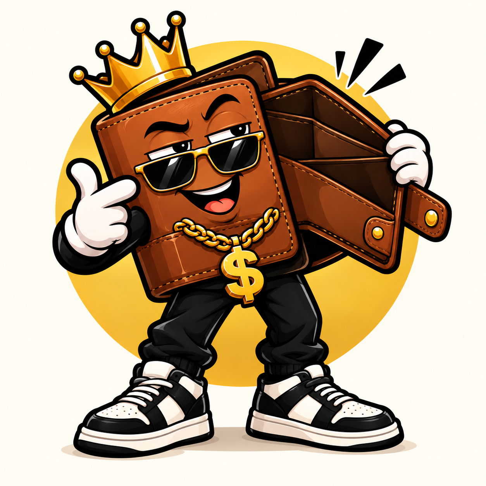
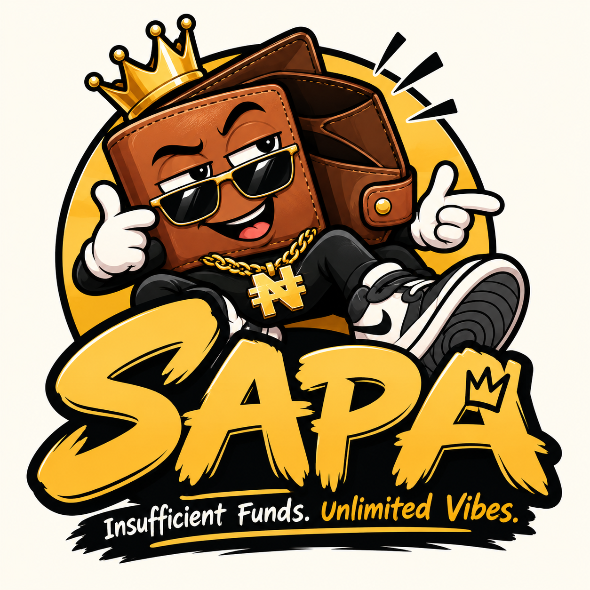
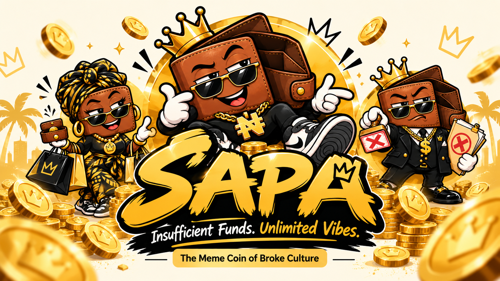
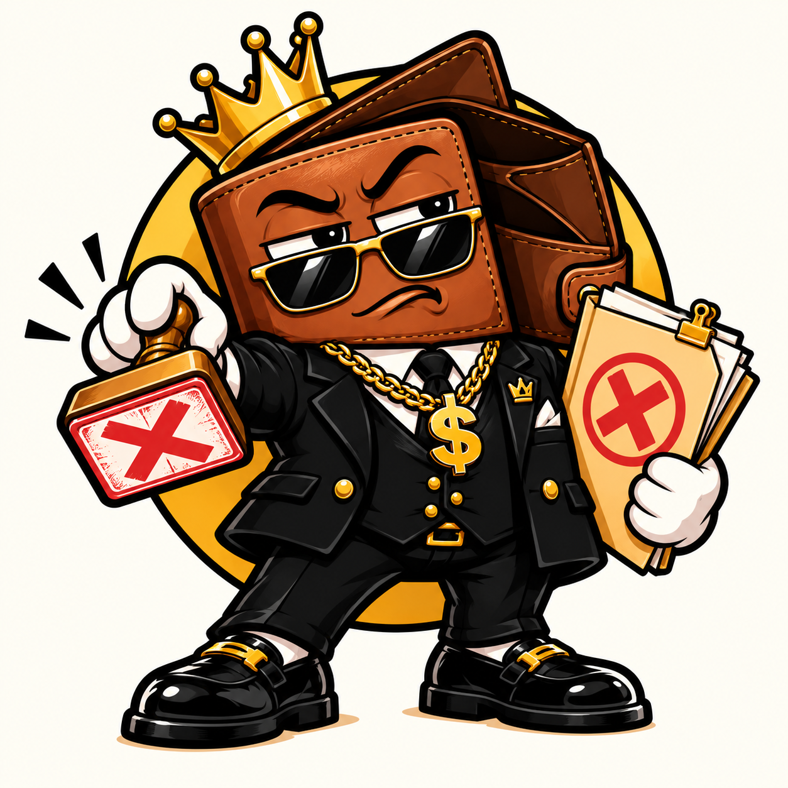

Chief Sapa
The legendary ruler of insufficient funds — broke, royal and permanently unbothered.
A community-driven Solana meme coin inspired by the universal experience of being broke — and the uniquely Nigerian ability to laugh through it.

Sapa is Nigerian slang for that painfully familiar season of insufficient funds. $SAPA turns the shared experience into a meme-first community built on humour, creativity and participation.
It starts in Nigeria, but the joke is global: every country has its own version of checking the account balance twice and hoping mathematics has changed.
The SAPA Survival Kit is the community mission hub for $SAPA holders and supporters.
Take part in social tasks, meme challenges, creative missions, referrals and special community events to earn SAPA Points (SP) and unlock community rewards.
New missions and earning opportunities are posted directly in the official SAPA community channels.
Join the SAPA Survival Club, pick up your next mission and start earning.
Complete Missions. Collect Points. Survive Sapa.


The legendary ruler of insufficient funds — broke, royal and permanently unbothered.
The budget queen who can stretch the last dollar without losing the vibes.

The official authority on declined balances, empty wallets and emergency Sapa conditions.
*Proposed maximum supply. Final on-chain token configuration should be published and independently verifiable at launch.
$SAPA is not a guaranteed investment, savings product or promise of profit. Crypto assets are volatile and can lose all value. Participate responsibly.
Brand identity, community channels, Pump.fun launch, website and first meme campaigns.
SAPA Missions, points, ranks, sticker packs, daily challenges and creator competitions.
Creator collaborations, merchandise, digital collectibles and community experiences.
Cross-cultural memes, African Web3 collaborations and wider entertainment partnerships.
$SAPA is a Solana-based community meme token inspired by Nigerian internet slang for being broke or financially stretched.
No. $SAPA is a speculative meme token. There are no guaranteed returns, dividends or promises that its price will increase.
It is the project's engagement layer: missions, memes, points, ranks, challenges, digital content and community experiences.
No. SAPA Points are intended as an off-chain participation and reputation system unless the project explicitly announces otherwise.
Only use links from verified SAPA channels. Never share your seed phrase, private key, password or banking PIN with anyone.